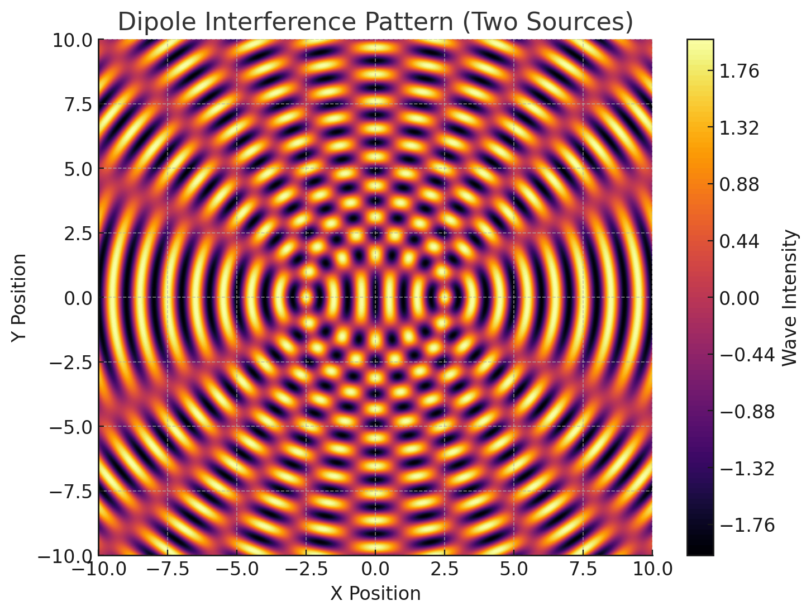
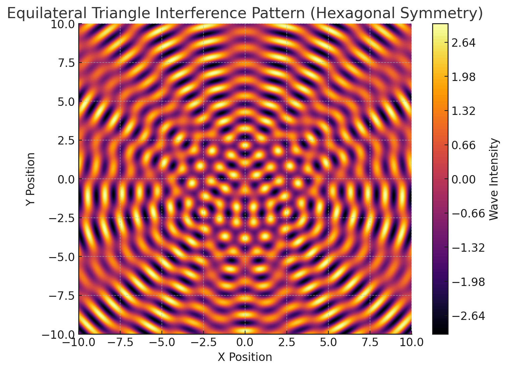
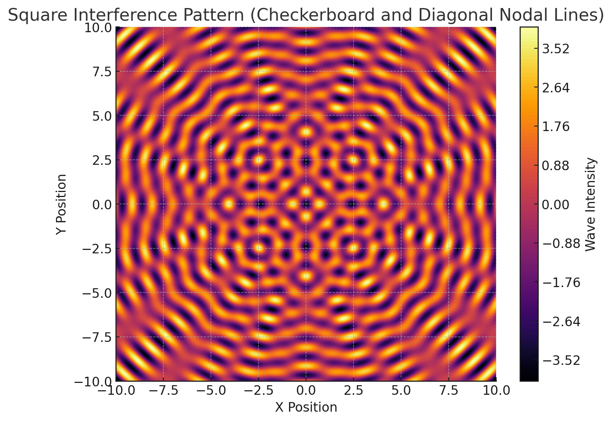
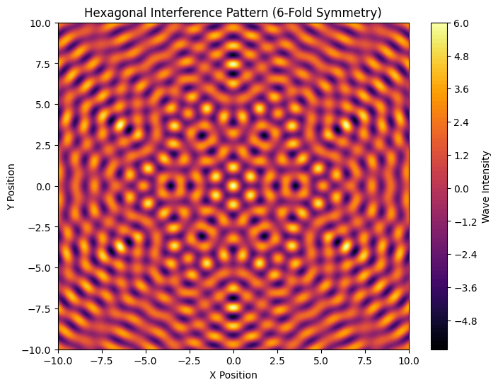

Problem 1
Interference Patterns from Regular Polygon Wave Sources
Introduction
When waves from multiple sources interact, they create intricate interference patterns due to superposition. Here, we analyze the patterns formed by N identical wave sources placed at the vertices of a regular polygon.
Mathematical Framework
Wave Equation for a Single Source
Each point source at position \((X_n,Y_n)\) generates a circular wave on the water surface:
Where:
-
\(A =\) wave amplitude
-
$r_n = \sqrt{(x - x_n)^2 + (y - y_n)^2} = $ distance from source \(n\) to point \((x,y)\)
-
\(k = \frac{2\pi}{\lambda} \quad \text{where } k = \text{wavenumber and } \lambda = \text{wavelength}\)
-
\(\omega = 2\pi f =\)= angular frequency \((f=frequency)\)
-
\(\phi_n =\) phase of source \(n\)
Superposition of Waves
The total displacement at any point \((x,y)\) is the sum of waves from all \(N\) sources:
Regular Polygon Configuration
For an \(N-sided\) polygon centered at the origin with radius \(R\), the positions of the sources are:
Interference Analysis
Constructive Interference (Maxima)
Waves add up when their phases align:
For identical phases \(\phi_n = \phi\) this simplifies to:
These regions appear as bright spots where waves reinforce each other.
Destructive Interference (Minima)
Waves cancel out when they are out of phase. For two sources, complete cancellation occurs when:
For \(N\) sources, cancellation is more complex but happens where the sum of waves is zero.
Resulting Interference Patterns
Key Features:
-
Symmetry → \(N-fold\) rotational symmetry \((e.g., hexagonal for N=6)\)
-
Nodal Lines → Lines where waves cancel \((\eta_{\text{total}} \approx 0)\)
-
Antinodal Regions → Areas of maximum wave amplitude
-
Amplitude Decay → Falls as \(\frac{1}{\sqrt{r}}\) from each source
Time Evolution & Intensity
The pattern oscillates with frequency \(f\), but the time-averaged intensity is:
Graph Example
- (Dipole) Hyperbolic nodal lines, classic two-source interference

- (Equilateral Triangle) Hexagonal symmetry in far field

- (Square) Strong diagonal nodal lines, checkerboard-like maxima

- (Hexagon) Complex flower-like pattern with 6-fold symmetry

Conclusion
-
The number of sides \((N)\) determines the symmetry of the pattern.
-
The wavelength \((λ)\) controls the spacing of interference fringes.
-
Applications: Antenna arrays, acoustics, quantum wave interference.